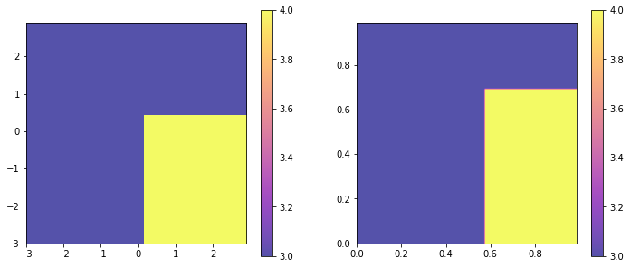
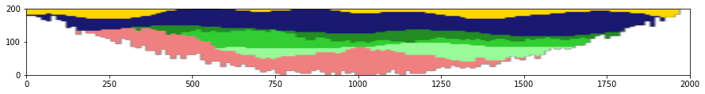

Article ArchPy exemple¶
This notebook presents the syntetical case of the ArchPy article
[1]:
import numpy as np
import matplotlib
from matplotlib import colors
import matplotlib.pyplot as plt
import geone
import geone.covModel as gcm
import geone.imgplot3d as imgplt3
import pyvista as pv
import sys
sys.path.append("../../")
#my modules
from ArchPy.base import *
from ArchPy.tpgs import *
[2]:
PB = Pile(name = "PB",seed=1)
P1 = Pile(name="P1",seed=1)
[3]:
#grid
sx = 15
sy = 15
sz = 4
x1 = 2000
y1 = 3000
z1 = 201
x0 = 0
y0 = 0
z0 = 0
nx = int((x1-x0)/sx)
ny = int((y1-y0)/sy)
nz = int((z1-z0)/sz)
xg = np.linspace(x0,x1,nx+1)
yg = np.linspace(y0,y1,ny+1)
zg = np.linspace(z0,z1,nz+1)
sx = xg[1] - xg[0]
sy = yg[1] - yg[0]
sz = zg[1] - zg[0]
dimensions = (nx, ny, nz)
spacing = (sx, sy, sz)
origin = (x0, y0, z0)
top = 201
X,Y = np.meshgrid((xg+sx/2)[:-1],(yg+sy/2)[:-1])
cm = gcm.CovModel2D(elem=[("exponential",{"w":50,"r":[20,300]})])
#bot
c = (x1-x0)/5
bot = (z1/1.8)*np.sin(X/c+2.15)+(z1/1.8)
bot = geone.grf.grf2D(cm,(nx,ny),(sx,sy),(x0,y0),mean = bot)[0]
#bot 2
bot2 = ((X-xg[int(nx/2)])**2)
bot2 /= np.max(bot2)
bot2 *= 200
bot2 = geone.grf.grf2D(cm,(nx,ny),(sx,sy),(x0,y0),mean = bot2)[0]
plt.imshow(bot2)
plt.colorbar()
GRF2D: Preliminary computation...
GRF2D: Computing circulant embedding...
GRF2D: Embedding dimension: 256 x 256
GRF2D: Computing FFT of circulant matrix...
GRF2D: Unconditional simulation 1 of 1...
GRF2D: Preliminary computation...
GRF2D: Computing circulant embedding...
GRF2D: Embedding dimension: 256 x 256
GRF2D: Computing FFT of circulant matrix...
GRF2D: Unconditional simulation 1 of 1...
[3]:
<matplotlib.colorbar.Colorbar at 0x20c66b84948>

[4]:
plt.imshow(bot)
plt.colorbar()
[4]:
<matplotlib.colorbar.Colorbar at 0x20c66d09f88>

[5]:
plt.plot(bot[25,:])
[5]:
[<matplotlib.lines.Line2D at 0x20c66db0648>]

[6]:
## setup TPGs for B units
#flag
t2g1 = -0.3
t3g1 = .2
t1g2 = -0
t2g2 = 0.5
dic4 = [[(t3g1,np.inf),(-np.inf,t2g2)]] #where facies 4 is present
dic3 = [[(-np.inf,t3g1),(-np.inf,np.inf)],[(t3g1,np.inf),(t2g2,np.inf)]]#where facies 3 is present
flag = {4:dic4,
3:dic3}
plt.figure(figsize=(12,5))
plt.subplot(1,2,1)
plot_flag(flag,alpha=.7)
plt.subplot(1,2,2)
plot_flag(Gspace2Pspace(flag),alpha=.7)
## G_cm
G1 = gcm.CovModel3D(elem=[("cubic",{"w":1.,"r":[200,200,30]})],name="G1")
G2 = gcm.CovModel3D(elem=[("cubic",{"w":1.,"r":[200,200,30]})],name="G2",alpha=30,beta=10)
G_cm = [G1,G2]

[7]:
#TIs setup, modify values to match with facies
TI_D = "../../data/TIs/channels3D/ti_channels3D_4f_200x100x22.vtk"
TI_D = gcm.img.readImageVtk(TI_D)
TI_D.val = Arr_replace(TI_D.val,{0:3,1:4,2:1,3:2})
imgplt3.drawImage3D_surface(TI_D,filtering_value=[1,2,4])
TI_B3 = "../../data/TIs/channels3D_strebelle/ti_channels_strebelle3D_125x125x21.vtk"
TI_B3 = gcm.img.readImageVtk(TI_B3)
TI_B3.val = Arr_replace(TI_B3.val,{0:3,1:2})
imgplt3.drawImage3D_surface(TI_B3,filtering_value=[2])
C:\Users\emmal\Anaconda3\envs\LS\lib\site-packages\pyvista\core\dataset.py:1335: PyvistaDeprecationWarning: Use of `cell_arrays` is deprecated. Use `cell_data` instead.
PyvistaDeprecationWarning
[8]:
p3_min = 0.1
p3_max = 0.35
p0_min = 0.05
p0_max = 0.15
[9]:
Z,Y,X = np.meshgrid(zg[:-1],yg[:-1],xg[:-1],indexing='ij')
[10]:
p3 = (Y/Y.max())*(p3_max-p3_min)+p3_min
p3[:,:50,:50] = 0
p3[:,:50,90:] = 0
p1 = 0.8*p3.copy()
p0 = (Y/Y.max())*(p0_max-p0_min)+p0_min
p0[:,:50,:50] = 0
p0[:,:50,90:] = 0
p2 = 1 - p0 - p1 - p3
nclass= 4
local_pdf = np.zeros((nclass,nz,ny,nx))
local_pdf[0] = p0
local_pdf[1] = p1
local_pdf[2] = p2
local_pdf[3] = p3
[11]:
arr = local_pdf[2]
im = geone.img.Img(nx,ny,nz,sx,sy,sz,x0,y0,z0,nv=1,val=arr)
imgplt3.drawImage3D_surface(im)
Define and setup units¶
[12]:
## Surfaces covmodel
covmodelD = gcm.CovModel2D(elem=[('cubic', {'w':100, 'r':[500,1000]})])
covmodelC = gcm.CovModel2D(elem=[('cubic', {'w':100, 'r':[500,1000]})])
covmodelB = gcm.CovModel2D(elem=[('cubic', {'w':100, 'r':[600,800]})])
covmodelA = gcm.CovModel2D(elem=[('spherical', {'w':200, 'r':[600,3000]})])
covmodel_er = gcm.CovModel2D(elem=[('spherical', {'w':200, 'r':[800,800]})])
## facies covmodel
covmodel_SIS_C = gcm.CovModel3D(elem=[("exponential",{"w":.25,"r":[100,100,30]})],alpha=0,name="vario_SIS") # input variogram
covmodel_SIS_B2 = gcm.CovModel3D(elem=[("exponential",{"w":.25,"r":[300,300,30]})],alpha=0,name="vario_SIS") # input variogram
lst_covmodelC=[covmodel_SIS_C] # list of covmodels to pass at the facies dictionary
cm_SIS_A = gcm.CovModel3D(elem=[("exponential",{"w":.25,"r":[150,150,30]})],alpha=0,name="vario_SIS")
#create Lithologies
dic_s_D = {"int_method" : "kriging","covmodel" : covmodelD}
dic_f_D = {"f_method" : "MPS","TI":TI_D,"xr":0.5,"yr":0.5,"zr":1,"maxscan":0.1,"thresh":0.1,
"rot_usage":1,"rotAzi":90,"neig":15,"globalPdf":(0.28,0.27,0.35,0.1),"localPdf":local_pdf,"probaUsage":2}
D = Unit(name="D",order=1,ID = 1,color="gold",contact="onlap",surface=Surface(contact="onlap",dic_surf=dic_s_D)
,dic_facies=dic_f_D)
dic_s_C = {"int_method" : "grf_ineq","covmodel" : covmodelC}
dic_f_C = {"f_method" : "TPGs","Flag" : flag,"G_cm":G_cm,"grf_method":"sgs"}
C = Unit(name="C",order=2,ID = 2,color="midnightblue",contact="onlap",dic_facies=dic_f_C,surface=Surface(dic_surf=dic_s_C,contact="erode"))
dic_s_B = {"int_method" : "grf_ineq","covmodel" : covmodelB}
dic_f_B = {"f_method":"SubPile","SubPile":PB}
B = Unit(name="B",order=3,ID = 3,color="green",contact="onlap",dic_facies=dic_f_B,surface=Surface(contact="erode",dic_surf=dic_s_B))
dic_s_A = {"int_method":"grf_ineq","covmodel" : covmodelA}
dic_f_A = {"f_method":"SIS","neig":10,"f_covmodel":cm_SIS_A,"probability":(0.1,0.9)}
A = Unit(name="A",order=5,ID = 5,color="lightcoral",contact="onlap",dic_facies=dic_f_A,surface=Surface(dic_surf = dic_s_A,contact="onlap"))
#Master pile
P1.add_unit([D,C,B,A])
#Subpile
# PB
ds_B3 = {"int_method":"grf_ineq","covmodel":covmodelB}
df_B3 = {"f_method":"MPS","TI":TI_B3,"xr":0.5,"yr":0.5,"zr":1,"rotAzi":90,
"rot_usage":1,"neig":20,"maxscan":0.15,"thresh":0.02,
"anisotropyRatioMode":"manual","ax":1,"ay":1,"az":1,"globalPdf":(0.5,0.5),"probaUsage":1}
B3 = Unit(name = "B3",order=1,ID = 6,color="forestgreen",surface=Surface(dic_surf=ds_B3,contact="onlap"),dic_facies=df_B3)
ds_B2 = {"int_method":"grf_ineq","covmodel":covmodel_er}
df_B2 = {"f_method":"SIS","neig" : 10,"f_covmodel":covmodel_SIS_B2}
B2 = Unit(name = "B2",order=2,ID = 7,color="limegreen",surface=Surface(dic_surf=ds_B2,contact="erode"),dic_facies=df_B2)
ds_B1 = {"int_method":"grf_ineq","covmodel":covmodelB}
df_B1 = {"f_method":"SIS","neig" : 10,"f_covmodel":covmodel_SIS_B2}
B1 = Unit(name = "B1",order=3, ID = 8,color="palegreen",surface=Surface(dic_surf=ds_B1,contact="onlap"),dic_facies=df_B1)
## Subpile
PB.add_unit([B3,B2,B1])
Unit D: TI added
Unit D : Surface added for interpolation
Unit C : Surface added for interpolation
Unit B : Surface added for interpolation
Unit A: covmodel for SIS added
Unit A : Surface added for interpolation
Stratigraphic unit D added
Stratigraphic unit C added
Stratigraphic unit B added
Stratigraphic unit A added
Unit B3: TI added
Unit B3 : Surface added for interpolation
Unit B2: covmodel for SIS added
Unit B2 : Surface added for interpolation
Unit B1: covmodel for SIS added
Unit B1 : Surface added for interpolation
Stratigraphic unit B3 added
Stratigraphic unit B2 added
Stratigraphic unit B1 added
Facies and properties¶
[13]:
# covmodels for the property model
covmodelK = gcm.CovModel3D(elem=[("exponential",{"w":0.3,"r":[200,200,10]})],alpha=-20,name="K_vario")
covmodelK2 = gcm.CovModel3D(elem=[("spherical",{"w":0.1,"r":[100,100,10]})],alpha=0,name="K_vario_2")
covmodelPoro = gcm.CovModel3D(elem=[("exponential",{"w":0.005,"r":[200,200,20]})],alpha=0,name="poro_vario")
Sand = Facies(ID = 1,name="Sand",color="yellow")
Gravel = Facies(ID = 2,name="Gravel",color="lightgreen")
Clay = Facies(ID = 3,name="Clay",color="blue")
Silt = Facies(ID = 4,name="Silt",color="goldenrod")
A.add_facies([Gravel,Silt])
B3.add_facies([Clay,Gravel])
B2.add_facies([Silt,Sand])
B1.add_facies([Gravel,Sand])
D.add_facies([Clay,Gravel,Sand,Silt])
C.add_facies([Clay,Silt])
permea = Prop("K",[Clay,Sand,Gravel,Silt],
[covmodelK2,covmodelK,covmodelK2,covmodelK],
means=[-8,-3.5,-2.5,-5.5],
int_method = ["sgs","sgs","sgs","sgs"],
def_mean=-5)
poro = Prop("Porosity",
[Clay,Sand,Gravel,Silt],
[covmodelPoro,covmodelPoro,covmodelPoro,covmodelPoro],
means = [0.2,0.3,0.4,0.2],
int_method = ["homogenous","sgs","sgs","sgs"],
def_mean=0.3,vmin=0.0)
Facies Gravel added to unit A
Facies Silt added to unit A
Facies Clay added to unit B3
Facies Gravel added to unit B3
Facies Silt added to unit B2
Facies Sand added to unit B2
Facies Gravel added to unit B1
Facies Sand added to unit B1
Facies Clay added to unit D
Facies Gravel added to unit D
Facies Sand added to unit D
Facies Silt added to unit D
Facies Clay added to unit C
Facies Silt added to unit C
[14]:
#We must create an ArchTable object and set a Pile master (first pile)
T1 = Arch_table(name = "P1",seed=1, working_directory = "ws_article") #working directory is for saving and loading I/O files
T1.set_Pile_master(P1)
T1.add_grid(dimensions, spacing, origin, top=top*np.ones([ny,nx]),bot=bot2) #add grid
T1.rem_all_bhs()
T1.add_prop([permea,poro])
Pile sets as Pile master
## Adding Grid ##
## Grid added and is now simulation grid ##
boreholes removed
Property K added
Property Porosity added
[15]:
#load boreholes data
l_bhs = pd.read_csv("ws_article/P1.lbh") #boreholes list
db, l_bhs = ArchPy.inputs.load_bh_files(pd.read_csv("ws_article/P1.lbh"), pd.read_csv("ws_article/P1.fd"), pd.read_csv("ws_article/P1.ud"), altitude=True)
boreholes = ArchPy.inputs.extract_bhs(db, l_bhs, T1)
T1.add_bh(boreholes)
Borehole 1 added
Borehole 2 added
Borehole 3 added
Borehole 4 added
Borehole 5 added
Borehole 6 added
Borehole 7 added
Borehole 8 added
Borehole 9 added
Borehole 10 added
Borehole 11 added
Borehole 12 added
Borehole 13 added
Borehole 14 added
Borehole 15 added
Borehole 16 added
Borehole 17 added
Borehole 18 added
Borehole 19 added
Borehole 20 added
[16]:
T1.plot_bhs(plot_bot=True,plot_top=True)
[17]:
#extract hard data from boreholes
T1.process_bhs()
##### ORDERING UNITS #####
Pile P1 : ordering units
Stratigraphic units have been sorted according to order
Discrepency in the orders for units A and B
Changing orders for that they range from 1 to n
Pile PB : ordering units
Stratigraphic units have been sorted according to order
hierarchical relations set
Processing ended successfully
Ready for the simulations¶
Surfaces and units first¶
[18]:
T1.compute_surf(5, fl_top=True)
########## PILE P1 ##########
Pile P1 : ordering units
Stratigraphic units have been sorted according to order
#### COMPUTING SURFACE OF UNIT A
A : time elapsed for computing surface 0.05805182456970215 s
#### COMPUTING SURFACE OF UNIT B
B : time elapsed for computing surface 0.0420377254486084 s
#### COMPUTING SURFACE OF UNIT C
C : time elapsed for computing surface 0.08307576179504395 s
#### COMPUTING SURFACE OF UNIT D
D : time elapsed for computing surface 0.0 s
Time elapsed for getting domains 0.13812541961669922 s
#### COMPUTING SURFACE OF UNIT A
A : time elapsed for computing surface 0.05905413627624512 s
#### COMPUTING SURFACE OF UNIT B
B : time elapsed for computing surface 0.0420382022857666 s
#### COMPUTING SURFACE OF UNIT C
C : time elapsed for computing surface 0.08407711982727051 s
#### COMPUTING SURFACE OF UNIT D
D : time elapsed for computing surface 0.0 s
Time elapsed for getting domains 0.14413118362426758 s
#### COMPUTING SURFACE OF UNIT A
A : time elapsed for computing surface 0.05905294418334961 s
#### COMPUTING SURFACE OF UNIT B
B : time elapsed for computing surface 0.043039560317993164 s
#### COMPUTING SURFACE OF UNIT C
C : time elapsed for computing surface 0.08507776260375977 s
#### COMPUTING SURFACE OF UNIT D
D : time elapsed for computing surface 0.0 s
Time elapsed for getting domains 0.13512253761291504 s
#### COMPUTING SURFACE OF UNIT A
A : time elapsed for computing surface 0.0570521354675293 s
#### COMPUTING SURFACE OF UNIT B
B : time elapsed for computing surface 0.04103684425354004 s
#### COMPUTING SURFACE OF UNIT C
C : time elapsed for computing surface 0.08207392692565918 s
#### COMPUTING SURFACE OF UNIT D
D : time elapsed for computing surface 0.0 s
Time elapsed for getting domains 0.1481342315673828 s
#### COMPUTING SURFACE OF UNIT A
A : time elapsed for computing surface 0.060054779052734375 s
#### COMPUTING SURFACE OF UNIT B
B : time elapsed for computing surface 0.0420374870300293 s
#### COMPUTING SURFACE OF UNIT C
C : time elapsed for computing surface 0.08307719230651855 s
#### COMPUTING SURFACE OF UNIT D
D : time elapsed for computing surface 0.0 s
Time elapsed for getting domains 0.14313006401062012 s
##########################
########## PILE PB ##########
Pile PB : ordering units
Stratigraphic units have been sorted according to order
#### COMPUTING SURFACE OF UNIT B1
B1 : time elapsed for computing surface 0.08107352256774902 s
#### COMPUTING SURFACE OF UNIT B2
B2 : time elapsed for computing surface 0.08007216453552246 s
#### COMPUTING SURFACE OF UNIT B3
B3 : time elapsed for computing surface 0.0 s
Time elapsed for getting domains 0.09808945655822754 s
#### COMPUTING SURFACE OF UNIT B1
B1 : time elapsed for computing surface 0.08307552337646484 s
#### COMPUTING SURFACE OF UNIT B2
B2 : time elapsed for computing surface 0.07706999778747559 s
#### COMPUTING SURFACE OF UNIT B3
B3 : time elapsed for computing surface 0.0 s
Time elapsed for getting domains 0.09708809852600098 s
#### COMPUTING SURFACE OF UNIT B1
B1 : time elapsed for computing surface 0.08307456970214844 s
#### COMPUTING SURFACE OF UNIT B2
B2 : time elapsed for computing surface 0.07806992530822754 s
#### COMPUTING SURFACE OF UNIT B3
B3 : time elapsed for computing surface 0.0 s
Time elapsed for getting domains 0.11310362815856934 s
#### COMPUTING SURFACE OF UNIT B1
B1 : time elapsed for computing surface 0.0840764045715332 s
#### COMPUTING SURFACE OF UNIT B2
B2 : time elapsed for computing surface 0.07807183265686035 s
#### COMPUTING SURFACE OF UNIT B3
B3 : time elapsed for computing surface 0.0 s
Time elapsed for getting domains 0.10809874534606934 s
#### COMPUTING SURFACE OF UNIT B1
B1 : time elapsed for computing surface 0.08307480812072754 s
#### COMPUTING SURFACE OF UNIT B2
B2 : time elapsed for computing surface 0.08307552337646484 s
#### COMPUTING SURFACE OF UNIT B3
B3 : time elapsed for computing surface 0.0 s
Time elapsed for getting domains 0.10309267044067383 s
##########################
### 3.167881488800049 : Total time elapsed for computing surfaces ###
[19]:
plt.figure(figsize=(15,5))
plt.imshow(T1.get_units_domains_realizations(fill="color")[0,:,60,:],origin="lower",extent=[x0,x1,z0,z1])
[19]:
<matplotlib.image.AxesImage at 0x20c054f9b48>

[20]:
#set default params for Pyvista
ntbk = True
pv.global_theme.color=(0,0,0)
pv.global_theme.font.color=(0,0,0)
pv.global_theme.background = [1,1,1]
[21]:
p = pv.Plotter(off_screen = True,notebook=ntbk)
iu = 3
T1.plot_units(iu,v_ex=3,plotter=p,slicex=(0.5),slicey=(0.94,0.5,0.13),slicez=0.2,h_level=2)
T1.plot_bhs(plotter=p,v_ex=3)
p.camera_position = 'yz'
p.camera.azimuth = 45
p.camera.elevation=20
p.camera.zoom(1.2)
p.show()
p = pv.Plotter(off_screen = True,notebook=ntbk)
iu = 2
T1.plot_units(iu,v_ex=3,plotter=p,slicex=(0.5),slicey=(0.94,0.5,0.13),slicez=0.2,h_level=2)
T1.plot_bhs(plotter=p,v_ex=3)
p.camera_position = 'yz'
p.camera.azimuth = 45
p.camera.elevation=20
p.camera.zoom(1.2)
p.show()
C:\Users\emmal\Anaconda3\envs\LS\lib\site-packages\pyvista\core\dataset.py:1335: PyvistaDeprecationWarning: Use of `cell_arrays` is deprecated. Use `cell_data` instead.
PyvistaDeprecationWarning
[22]:
p = pv.Plotter(off_screen = True,notebook=ntbk)
iu = 3
T1.plot_units(iu,v_ex=3,plotter=p,slicex=(0.5),slicey=(0.94,0.5,0.13),slicez=0.2,h_level=2)
T1.plot_bhs(plotter=p,v_ex=3)
p.camera_position = 'yz'
p.camera.azimuth = 0
p.camera.elevation=0
p.camera.zoom(1.2)
p.show()
p = pv.Plotter(off_screen = True,notebook=ntbk)
iu = 2
T1.plot_units(iu,v_ex=3,plotter=p,slicex=(0.5),slicey=(0.94,0.5,0.13),slicez=0.2,h_level=2)
T1.plot_bhs(plotter=p,v_ex=3)
p.camera_position = 'yz'
p.camera.azimuth = 0
p.camera.elevation= 0
p.camera.zoom(1.2)
p.show()
[23]:
#plot volume
T1.plot_units(0, v_ex=3)
[50]:
T1.plot_proba(A,v_ex=3,filtering_interval=[0.01,1],slicex=(),slicey=(0.1,0.4,0.7))
[25]:
T1.compute_facies(1)
### Unit D : facies simulation with MPS method ####
### Unit D - realization 0 ###
### Unit D - realization 1 ###
### Unit D - realization 2 ###
### Unit D - realization 3 ###
### Unit D - realization 4 ###
Time elapsed 67.19 s
### Unit C : facies simulation with TPGs method ####
### Unit C - realization 0 ###
### Unit C - realization 1 ###
### Unit C - realization 2 ###
### Unit C - realization 3 ###
### Unit C - realization 4 ###
Time elapsed 17.44 s
### Unit B : facies simulation with SubPile method ####
SubPile filling method, nothing happened
Time elapsed 0.0 s
### Unit A : facies simulation with SIS method ####
### Unit A - realization 0 ###
Only one facies covmodels for multiples facies, adapt sill to right proportions
### Unit A - realization 1 ###
### Unit A - realization 2 ###
### Unit A - realization 3 ###
### Unit A - realization 4 ###
Time elapsed 2.72 s
### Unit B3 : facies simulation with MPS method ####
### Unit B3 - realization 0 ###
### Unit B3 - realization 1 ###
### Unit B3 - realization 2 ###
### Unit B3 - realization 3 ###
### Unit B3 - realization 4 ###
Time elapsed 132.87 s
### Unit B2 : facies simulation with SIS method ####
### Unit B2 - realization 0 ###
Some errors have been found
Some facies were found inside units where they shouldn't be
### List of errors ####
Facies Clay : 6 points
Facies Gravel : 10 points
Only one facies covmodels for multiples facies, adapt sill to right proportions
### Unit B2 - realization 1 ###
Some errors have been found
Some facies were found inside units where they shouldn't be
### List of errors ####
Facies Clay : 6 points
Facies Gravel : 10 points
### Unit B2 - realization 2 ###
Some errors have been found
Some facies were found inside units where they shouldn't be
### List of errors ####
Facies Clay : 6 points
Facies Gravel : 10 points
### Unit B2 - realization 3 ###
Some errors have been found
Some facies were found inside units where they shouldn't be
### List of errors ####
Facies Clay : 6 points
Facies Gravel : 10 points
### Unit B2 - realization 4 ###
Some errors have been found
Some facies were found inside units where they shouldn't be
### List of errors ####
Facies Clay : 6 points
Facies Gravel : 10 points
Time elapsed 1.05 s
### Unit B1 : facies simulation with SIS method ####
### Unit B1 - realization 0 ###
Only one facies covmodels for multiples facies, adapt sill to right proportions
### Unit B1 - realization 1 ###
### Unit B1 - realization 2 ###
### Unit B1 - realization 3 ###
### Unit B1 - realization 4 ###
Time elapsed 1.21 s
### 222.47 : Total time elapsed for computing facies ###
[53]:
p = pv.Plotter(off_screen = True,notebook=ntbk)
iu = 3
v_ex = 3
T1.plot_facies(iu,v_ex=v_ex,plotter=p,slicex=(0.5),slicey=(0.935,0.5,0.13),slicez=0.2)
T1.plot_bhs("facies",plotter=p,v_ex=v_ex)
p.camera_position = 'yz'
p.camera.azimuth = 45
p.camera.elevation=20
p.camera.zoom(1.2)
p.show()
p = pv.Plotter(off_screen = True,notebook=ntbk)
iu = 2
T1.plot_facies(iu,v_ex=v_ex,plotter=p,slicex=(0.5),slicey=(0.935,0.5,0.13),slicez=0.2)
T1.plot_bhs("facies",plotter=p,v_ex=v_ex)
p.camera_position = 'yz'
p.camera.azimuth = 45
p.camera.elevation=20
p.camera.zoom(1.2)
p.show()
[54]:
p = pv.Plotter(off_screen = True,notebook=ntbk)
iu = 3
T1.plot_facies(iu,v_ex=v_ex,plotter=p)
T1.plot_bhs("facies",plotter=p,v_ex=v_ex)
p.camera_position = 'yz'
p.camera.azimuth = 45
p.camera.elevation=20
p.camera.zoom(1.2)
p.show()
p = pv.Plotter(off_screen = True,notebook=ntbk)
iu = 2
T1.plot_facies(iu,v_ex=v_ex,plotter=p)
T1.plot_bhs("facies",plotter=p,v_ex=v_ex)
p.camera_position = 'yz'
p.camera.azimuth = 45
p.camera.elevation=20
p.camera.zoom(1.2)
p.show()
[55]:
p = pv.Plotter(off_screen=True)
T1.plot_facies(0,v_ex=3,slicex=0.2,slicey=0.3,slicez=0.2,plotter=p)
p.camera_position = 'yz'
p.camera.azimuth = 45
p.camera.elevation=30
p.show()
p2 = pv.Plotter(off_screen=True)
T1.plot_units(0,3,slicex=0.2,slicey=0.3,slicez=0.2,plotter=p2)
p2.show()
[40]:
#We can also plot inside specific units
T1.plot_facies(inside_units=[B3],filtering_value=[2])
[41]:
T1.compute_prop(1)
### 5 K property models will be modeled ###
### 1 K models done
### 2 K models done
### 3 K models done
### 4 K models done
### 5 K models done
### 5 Porosity property models will be modeled ###
### 1 Porosity models done
### 2 Porosity models done
### 3 Porosity models done
### 4 Porosity models done
### 5 Porosity models done
[42]:
# for saving the project
ArchPy.inputs.save_project(T1)
Project saved successfully
[42]:
True
[52]:
p = pv.Plotter(off_screen = True,notebook=ntbk)
iu = 3
v_ex = 3
T1.plot_prop("K",iu=iu,v_ex=v_ex,plotter=p,slicex=(0.5),slicey=(0.935,0.5,0.13),slicez=0.2)
p.camera_position = 'yz'
p.camera.azimuth = 45
p.camera.elevation=20
p.camera.zoom(1.2)
p.show()
p = pv.Plotter(off_screen = True,notebook=ntbk)
iu = 2
T1.plot_prop("K",iu=iu,v_ex=v_ex,plotter=p,slicex=(0.5),slicey=(0.935,0.5,0.13),slicez=0.2)
p.camera_position = 'yz'
p.camera.azimuth = 45
p.camera.elevation=20
p.camera.zoom(1.2)
p.show()
[56]:
#poro
p = pv.Plotter(off_screen = True,notebook=ntbk)
iu = 3
v_ex = 3
T1.plot_prop("Porosity",iu=iu,v_ex=v_ex,plotter=p,slicex=(0.5),slicey=(0.935,0.5,0.13),slicez=0.2,cmin=0.1)
p.camera_position = 'yz'
p.camera.azimuth = 45
p.camera.elevation=20
p.camera.zoom(1.2)
p.show()
p = pv.Plotter(off_screen = True,notebook=ntbk)
iu = 2
T1.plot_prop("Porosity",iu=iu,v_ex=v_ex,plotter=p,slicex=(0.5),slicey=(0.935,0.5,0.13),slicez=0.2,cmin=0.1)
p.camera_position = 'yz'
p.camera.azimuth = 45
p.camera.elevation=20
p.camera.zoom(1.2)
p.show()
[57]:
iu = 2
p = pv.Plotter(off_screen = True,notebook=ntbk)
T1.plot_prop("Porosity",iu,v_ex=3,plotter=p,cmin=0.1)
p.camera_position = 'yz'
p.camera.azimuth = 45
p.camera.elevation=20
p.camera.zoom(1.2)
p.show()
iu = 3
p = pv.Plotter(off_screen = True,notebook=ntbk)
T1.plot_prop("Porosity",iu,v_ex=3,plotter=p,cmin=0.1)
p.camera_position = 'yz'
p.camera.azimuth = 45
p.camera.elevation=20
p.camera.zoom(1.2)
p.show()
[58]:
iu = 2
p = pv.Plotter(off_screen = True,notebook=ntbk)
T1.plot_prop("K",iu,v_ex=3,plotter=p)
p.camera_position = 'yz'
p.camera.azimuth = 45
p.camera.elevation=20
p.camera.zoom(1.2)
p.show()
iu = 3
p = pv.Plotter(off_screen = True,notebook=ntbk)
T1.plot_prop("K",iu,v_ex=3,plotter=p)
p.camera_position = 'yz'
p.camera.azimuth = 45
p.camera.elevation=20
p.camera.zoom(1.2)
p.show()
[ ]: